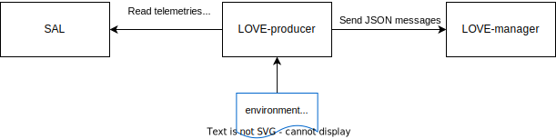

Overview
Introduction
The LOVE-producer is part of the LSST Operators Visualization Environment (L.O.V.E). It provides the necessary communication system to conect the LOVE-manager and SAL. It produce DDS messages to LOVE for one or more components of the LSST system.
It is a Python package and uses asyncio and the salobj library to handle asynchronous communication between the LOVE-manager and SAL.
It generates a websocket client, reads telemetries and events from SAL and then produces the messages to be sent to the LOVE-manager server.
The producer is configured with the name and the salindex of a specific CSC in order to connect to the respective salobj.Remote.
Configurations
Three environment variables must be set to allow the producer communicate with SAL and the LOVE-manager:
LSST_DDS_PARTITION_PREFIX: Used bysalobjto filter SAL messages in the network.PROCESS_CONNECTION_PASS: Password used by the LOVE-manager to allow the reception of messages from the LOVE-producer.WEBSOCKET_HOST: Hostname or IP address of the LOVE-manager service.
How to run
To run a love producer you need first to export the environment variables described above. Then you need to execute the following commands:
$ pip install <love_producer_folder>
$ run_love_producer --components <csc_name>:<salindex> --log-level <log_level>
You need to first install the package from <love_producer_folder> which is the root folder of the code.
Then to run one (or more) producer(s) use the run_love_producer with the --components argument.
The <csc_name> is the name of the CSC and <salindex> is the salindex of the CSC, if running more than one producer just use a comma separated list with the previously described params.
You can also configure the logging level with the --log-level argument where <log_level> is the log level in numeric form.